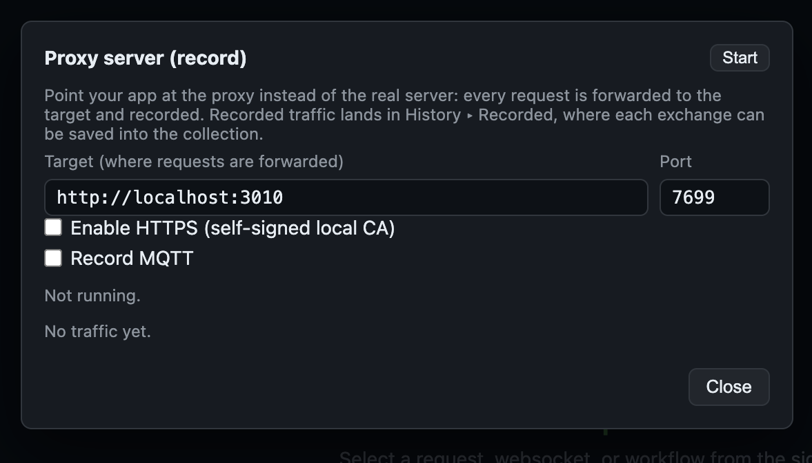
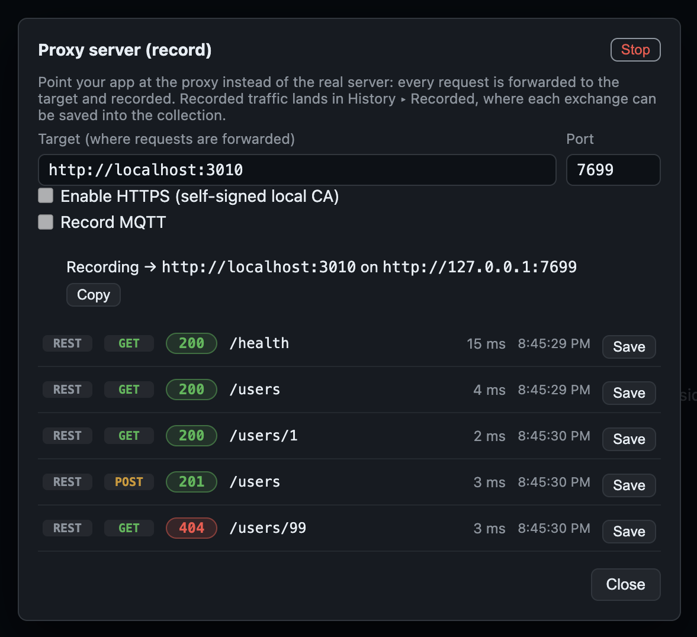
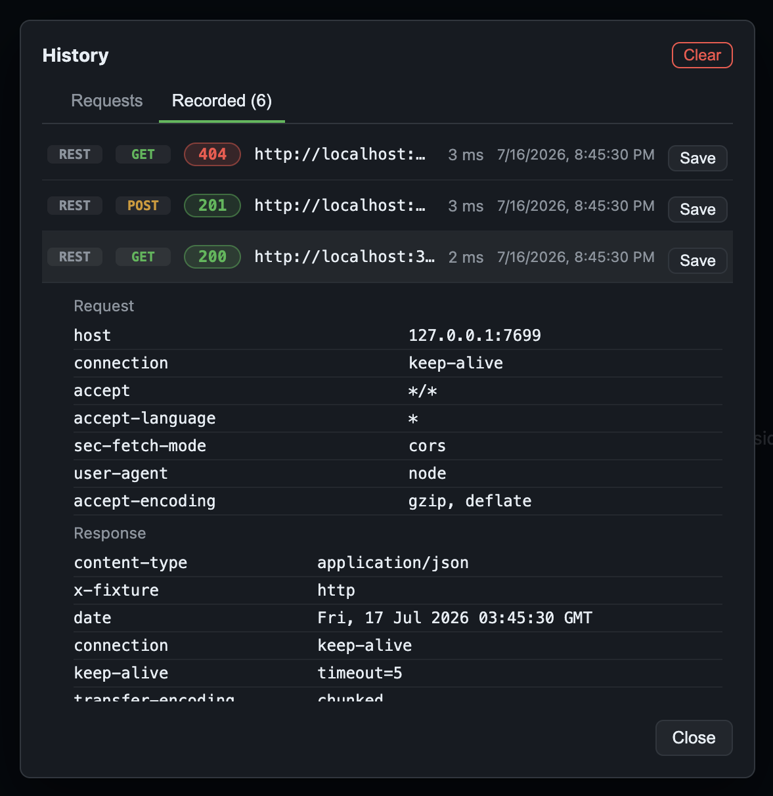
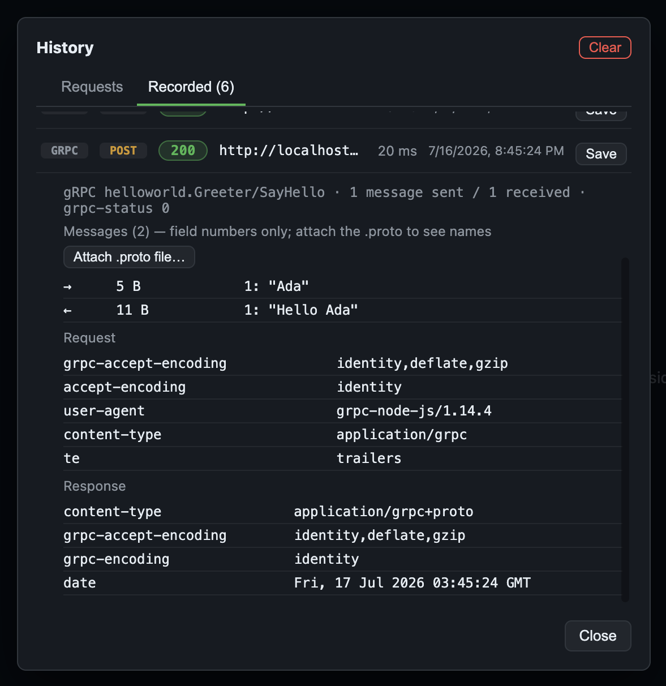

Proxy & record
The record proxy is a reverse proxy: point your app at
http://127.0.0.1:7699 instead of the real server, and every request is
forwarded on to the one target you configured — and recorded on the way through. The
captures land in History ▸ Recorded, where one click turns any of them
into a real request file in your collection.
Not a system proxy
This is deliberately not the mitmproxy/Charles model. There are no OS proxy
settings to flip, no HTTP_PROXY to export, and for plain HTTP no CA to install
anywhere — the proxy has exactly one target and you reach it by changing a base URL:
# before
API_BASE=http://localhost:3010
# while recording
API_BASE=http://127.0.0.1:7699The trade is that it can't fan out to arbitrary hosts the way a forward proxy can. In exchange, nothing on your machine is reconfigured, nothing else's traffic is intercepted, and turning recording off is closing one URL — not undoing a system setting you'll forget about.
Starting it
A collection must be open — recordings belong to it. Click Proxy in the top bar to open the panel, fill in the Target (the server you want forwarded to) and a Port, then Start:

7699. HTTPS and MQTT are separate opt-ins, each with its own port.Once started, a banner shows exactly what is being recorded and where to point your client, with a copy button. Every exchange streams into the live capture log below it:

/users/99 is the real
target's answer, forwarded back untouched.The proxy is per-session and never auto-starts: a listener that records every header verbatim is not something to leave running by accident. The menu item only opens the panel — starting is always an explicit click. It is also bound to whichever collection was open when it started; open a different one and the proxy stops rather than quietly record into a collection the traffic wasn't meant for.
From capture to request file
Everything the proxy sees is appended to the collection's History ▸ Recorded tab, which survives restarts. Expand a row to read the full request and response headers; click Save to write it into the collection as an ordinary request file:

host: 127.0.0.1:7699, the proxy's own listener, which is what your client
actually connected to.What it understands
Forwarding is a raw pass-through pipe, so streaming responses stream and nothing is buffered on your behalf. The bodies are teed off to the side for the recording only, and each exchange is classified by what it actually was:
- REST — method, path, status, both header sets, and capped body previews.
- GraphQL — the
operationNameis surfaced on the row, so a hundred requests to one/graphqlURL are told apart at a glance instead of readingPOST /graphql → 200a hundred times. A saved GraphQL capture opens in the editor's GraphQL body mode. - gRPC — service and method, messages sent/received, and the
grpc-statusfrom the trailers. gRPC is the one protocol carried end-to-end over HTTP/2, because HTTP/1.1 can't carry those trailers. - WebSocket — one exchange per session, captured frame by frame, with
socket.io / engine.io framing decoded so you see event names rather than
42["ev",…]. - SSE — the event stream is parsed into discrete events (
event,data,id,retry). When the stream is a token stream of JSON deltas, a Concatenate deltas toggle joins them back into the text that was actually produced. - MQTT — an opt-in relay on its own port; see below.
Decoded gRPC messages
Protobuf on the wire carries field numbers, never names — so by default Freepost
shows a schemaless field-number tree, decoded from the wire format alone. Attach the
.proto and the same tree comes back with real field names:

1: is field number 1.
Attach .proto file… replaces the numbers with names.Decoding without a schema is inherently ambiguous — a varint could be an int, a bool or an enum; a length-delimited field could be a nested message, a string or packed repeats — so the viewer reports the raw wire meaning and resolves length-delimited fields the way mitmproxy does: nested message if it parses cleanly, else a printable UTF-8 string, else bytes. A malformed or truncated message never throws; you get the fields decoded so far plus a marker.
Recording HTTPS
Tick Enable HTTPS (self-signed local CA) and the proxy opens a second,
TLS listener (default port 7700) alongside the plain one. On first use it
generates a local CA — one long-lived ECDSA P-256 root, plus a short-lived leaf for
localhost / 127.0.0.1 / ::1 that the listener
serves. The model is mkcert's; the leaf is re-issued automatically as it nears expiry,
without touching the CA.
Freepost does not install that CA into your OS trust store. Instead the panel offers Export CA certificate…, Copy CA path and per-stack Trust snippets…, so you point the one client you're recording at the one CA you just made:
curl --cacert ~/freepost-proxy-ca.crt https://127.0.0.1:7700/users
# or skip verification for a quick dev loop:
curl -k https://127.0.0.1:7700/users
NODE_EXTRA_CA_CERTS=~/freepost-proxy-ca.crt node app.js
# Python
requests.get('https://127.0.0.1:7700/users', verify='/path/to/ca.crt')
# gRPC (grpc-js)
const creds = grpc.credentials.createSsl(fs.readFileSync('/path/to/ca.crt'))Why the extra step? The client is your own code, and it already takes a CA as an argument. Scoping trust to that one process keeps it explicit and revocable — a root in your system keychain is trusted by your browser, your mail client and everything else on the machine, for as long as you forget it's there. There is an Install CA into system trust… button if you want it: it opens your operating system's own certificate-import UI (Keychain Access on macOS, the certificate wizard on Windows, or the file's folder on Linux). Nothing is installed unless you confirm it there. Regenerate CA… destroys the current CA and key and issues a new one — anywhere the old one was trusted stops trusting the proxy until you export and install the new one.
Recording MQTT
MQTT gets its own checkbox, its own Broker address and its own port
(default 7883). It needs all three because an MQTT broker is not an HTTP
origin — the target above could never mean both. Point your MQTT client at the listener
instead of the broker:
mosquitto_sub -h 127.0.0.1 -p 7883 -t 'sensors/#' -vThis is a transparent TCP relay, not an embedded broker. Every client connection gets its own connection to the real broker and the bytes are piped both ways, so the real broker stays authoritative and QoS, retained messages, sessions and keep-alive behave exactly as they do without the proxy. Freepost decodes packets off a passive tee, for display only — if the decoder trips on something, decoding stops and the bytes keep flowing. A session whose decoder gave up is reported as unknown, never as errored: the relay's blind spot is not the peer's fault.
Cleartext only, today. mqtts:// is rejected with an error
rather than silently downgraded to a cleartext connection you didn't ask for.
From the command line
freepost proxy is the headless half — same engine, same
recorded.jsonl, so traffic recorded from a terminal shows up in the same
History ▸ Recorded tab. --target is required; the positional collection path
is what the recordings bind to. It records until Ctrl-C.
freepost proxy ./my-collection --target http://localhost:3010
freepost proxy ./my-collection --target https://api.internal --port 7699 --https
freepost proxy ./my-collection --target http://localhost:3010 \
--mqtt-target mqtt://127.0.0.1:1883| Flag | Meaning |
|---|---|
--target <url> | Server to forward to. Required; http:// or https://. |
--port <n> | Port to listen on. Default 7699. |
--https | Also listen with TLS, using the local self-signed CA. |
--https-port <n> | TLS port. Default 7700. |
--mqtt-target <url> | Also relay MQTT to this broker (mqtt://host[:port]). |
--mqtt-port <n> | MQTT listen port. Default 7883. |
See the command-line guide for the rest of the CLI. Unlike the app there is no remembered prefill: a CLI invocation states its target every time.
Limits worth knowing
- Bodies are capped at 64 KiB so one large download can't bloat the
store. A capture past the cap is marked truncated — and a truncated body is
never written into a saved request. You get a note in the file instead
(
body omitted: capture truncated at 64 KiB), because a silently corrupt body is worse than an honest gap. Binary bodies are treated the same way. - Recordings live in
.freepost/history/recorded.jsonl, inside the collection,chmod 600(owner-only). The file is trimmed back to the most recent 500 entries — it's allowed to grow to twice that before a trim, so a busy proxy isn't re-reading the whole file on every request. - Recorded headers are verbatim — including credentials. An
Authorizationheader your app sent is in that file as it went over the wire..freepost/carries a self-regenerating.gitignorethat ignores everything in it, so the store stays local. But a request you Save into the collection is an ordinary file in your repo, and you may well commit it — read what you saved before you do, and replace secrets with a${VAR}from an environment. - WebSocket sessions retain at most 200 frames, with a 2 KiB preview per frame; gRPC retains at most 200 messages per direction. A saved WebSocket capture carries the frames that were sent, as comments — session replay is deliberately not promised.
- Your client's HTTP version may not be the target's. gRPC is always forwarded over
HTTP/2 —
grpc-statusarrives in trailers, which an HTTP/1.1 hop would drop. Any other HTTP/2 leg is forwarded over HTTP/2 only if the target speaks it, and otherwise downgraded to HTTP/1.1 — the same downgrade mitmproxy performs. Without that, an h2-capable client (curl and browsers offer h2 by default) would break against an HTTP/1.1-only backend, which is most of them. HTTP semantics don't depend on the wire version, so what you record is unaffected either way.
0.0.0.0, so nothing off your machine can
reach it. And it is off until you explicitly click Start: the menu item opens the panel,
nothing more. Same shape as the mock server — the only
sockets Freepost opens are the ones you asked for.